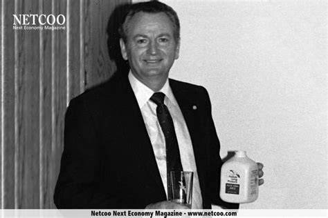

Founded in 1978 by Rex Maughan, Forever Living Products is a multi-billion dollar company that manufactures and sells hundreds of wellness and beauty products all around the world.
In 1978, Rex Maughan invited close family and friends to the first Forever Living Products meeting in Tempe, Arizona. There he unveiled a revolutionary and customized plan - offer the best consumable products to the public, products that are proven to promote lasting wellness and health, and let the products and the people who try them speak for themselves.
Since 1978, Forever Living Products has been dedicated to seeking out nature’s best sources for health and beauty and sharing them with the world. We have a passion for helping others look better and feel better, and pride that comes from doing things a little differently. We own our own aloe fields, manufacturing facilities, research and development, quality control laboratories and even our own distribution channels. Everything from plant to product to you.
 Click here to go to Home page